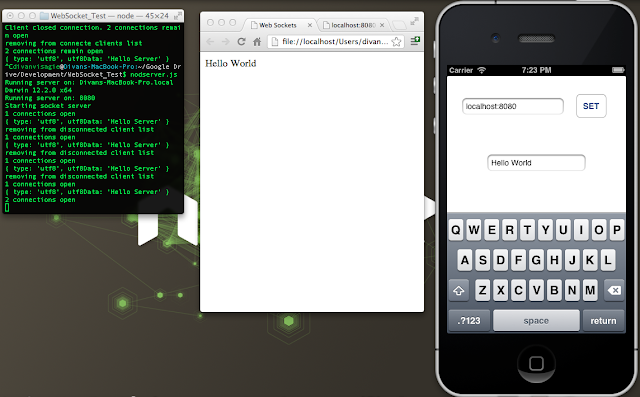

Node.js Web Sockets and iOS
A Web/Node.JS/iOS tutorial
2012-12-02 Updated 2020-10-11 · aec63deThis tutorial will be broken up into 3 sections.
- Node.js server
- HTML client
- iOS client
You can choose to do either 2 or 3 for the client or both if you desire , I have chosen to break it up like this so that those who are not in iOS development/web development aren't forced to do something they don't know or care about.
NOTE: This tutorial is intended for developers who are familiar with the mentioned platforms and skips the reglar explanations of syntax etc as it is intended to teach a concept rather than teaching code. For a lot of the concepts in this tutorial , the code IS the explanation.
First start off by creating a folder to work in , I named mine WebSocket_Test.
The Server
The server uses node.js, if you don't already have it , you can pick it up here. Once you are done there you can pick up my little library called NARF you can download narf from GitHub here or install it via npm npm install -g narf, this is less for the websockets and more for the quick implementation of HTTP GET functionality as you will see later. Once you have a copy of NARF copy its contents into your project folder.
Now create a file called server.js(you can name it anything you want actually but I will stick to this name so that we dont get lost).
The first thing we do in server.js is 'import' narf , after that we create an array that will store all of the client connections to the server. Next we create a GET function that will update a message to all of the clients.
When we start the http server , we store its variable for use with the socket server.
var narf = require( './narf' );
var connectedClients = []; //keep track of which clients are connected
var APIFunctions = { //forward facing functions
GET: { //headers object and parsed url are passed as a parameter for get functions
sendToClients: function (header, url){
connectedClients.forEach(function(connection){
connection.send( JSON.stringify( { message : url.message } ) );
});
}
},
POST: {}
};
narf.startHTTPServer(APIFunctions, function( httpServer ) {
narf.startSocketServer(httpServer, function( request ) {
var connection = request.accept( null, request.origin ); //accept the connection request
connectedClients.push(connection);
console.log( connectedClients.length + ' connections open' );
connection.on('message', function(message) { //the user has sent a message
if ( message.type === 'utf8' ){
console.log( message ); //process
if( typeof message === 'string' ) message = JSON.parse(message);
connection.send(JSON.stringify({ message : 'hello client' }));
}
} );
connection.on('close', function() { //The user has closed the connection
for (var i in connectedClients) {
/* remove the client connection from the array and free some memory*/
if( connectedClients[i] == connection ){
connectedClients.splice(i,1);
console.log('removing from disconnected client list');
}
}
});
});
});
To run the server simply run:
node server.js
You may have to install portastic and websocket as well before the server will work:
npm install portastic
npm install websocket
NARF runs the server on port 8080 , but this can be changed , for more details view NARF's readme
HTML Client
The HTML client is very simple, here I have hardwired it to localhost which you may have to change if you are running the server somewhere else or on a different port.
<!DOCTYPE html>
<html>
<head>
<meta charset="utf-8">
<title>Web Sockets</title>
</head>
<body>
<div id="content"></div>
<script>
window.WebSocket = window.WebSocket || window.MozWebSocket
var connection = new WebSocket('ws://localhost:8080');
connection.onopen = function() {
//connection opened
console.log('connection open');
connection.send('Hello Server');
};
connection.onerror = function(){
//connection error
};
connection.onmessage = function( message ){
console.log('Recieved message from server: ');
console.log(message);
var dataObject = JSON.parse(message.data );
document.getElementById('content').innerHTML = dataObject.message;
}
</script>
</body>
</html>
You cannot change the text on the html client but running the following in a new tab will call the GET function we set up on the server and update the message on all clients:
http://localhost:8080/?serverfunction=sendToClients&message=Hello World
iOS Client
For the iOS client download and set up the SocketRocket Library in a new Xcode project, don't forget to refer to the README and see if you have all of the required framework dependancies.
For this demo is set up a universal iOS app with 2 text fields and a button. One text field was for the server IP and port and the other for the message text itself. The button is merely to reset the connection once the user has changed the IP.
I set this all up in the default viewController , here is the code:
ViewController.h
//
// ViewController.h
// SocketTest
//
// Created by Divan Visagie on 2012/12/02.
// Copyright (c) 2012 Divan Visagie. All rights reserved.
//
#import <UIKit/UIKit.h>
#import "SRWebSocket.h"
@interface ViewController : UIViewController <UITextFieldDelegate,SRWebSocketDelegate>
@property (weak, nonatomic) IBOutlet UITextField *urlField;
@property (strong, nonatomic) IBOutlet UITextField *textField;
- (IBAction)setDown:(id)sender;
- (IBAction)textChanged:(id)sender;
@end
ViewController.m
//
// ViewController.m
// SocketTest
//
// Created by Divan Visagie on 2012/12/02.
// Copyright (c) 2012 Divan Visagie. All rights reserved.
//
#import "ViewController.h"
@interface ViewController (){
SRWebSocket *socket;
NSString *lastMessage;
}
@end
@implementation ViewController
- (void)viewDidLoad
{
[super viewDidLoad];
// Do any additional setup after loading the view, typically from a nib.
//create a web socket connection
socket = [[SRWebSocket alloc] initWithURLRequest:[NSURLRequest requestWithURL:[NSURL URLWithString:[NSString stringWithFormat:@"http://%@",_urlField.text]]]];
[socket open];
}
- (void)didReceiveMemoryWarning
{
[super didReceiveMemoryWarning];
// Dispose of any resources that can be recreated.
}
- (IBAction)setDown:(id)sender {
[socket close];
socket = nil;
socket = [[SRWebSocket alloc] initWithURLRequest:[NSURLRequest requestWithURL:[NSURL URLWithString:[NSString stringWithFormat:@"http://%@",_urlField.text]]]];
socket.delegate = self;
[socket open];
}
- (IBAction)textChanged:(id)sender {
NSLog(@"%@",((UITextView*)sender).text);
NSString *stringtoUse = ((UITextView*)sender).text;
if(![lastMessage isEqualToString:stringtoUse]){
stringtoUse = [stringtoUse stringByReplacingOccurrencesOfString:@" " withString:@"%20"];
NSURLRequest *request = [NSURLRequest requestWithURL:
[NSURL URLWithString:
[NSString stringWithFormat:
@"http://%@/?serverfunction=sendToClients&message=%@",_urlField.text,stringtoUse]]];
[NSURLConnection connectionWithRequest:request delegate:nil];
}
}
-(void)webSocket:(SRWebSocket *)webSocket didReceiveMessage:(id)message{
NSLog(@"%@",message);
NSString *msgString = message;
NSData *data = [msgString dataUsingEncoding:NSUTF8StringEncoding];
NSDictionary *toUse = [NSJSONSerialization JSONObjectWithData:data options:NSJSONReadingMutableLeaves error:nil];
if (![toUse[@"message"] isEqualToString:lastMessage] && ![toUse[@"message"] isEqualToString:_textField.text]) {
_textField.text = toUse[@"message"];
lastMessage = toUse[@"message"];
}
}
-(void)webSocket:(SRWebSocket *)webSocket didFailWithError:(NSError *)error{
}
-(void)webSocket:(SRWebSocket *)webSocket didCloseWithCode:(NSInteger)code reason:(NSString *)reason wasClean:(BOOL)wasClean{
}
@end
Now if you are running your node server and have all of your ip adresses set up correctly , when you run the app it will connect to the server and any text changed in the text field will automatically update on other devices.
If you do not have multiple devices to test on , I suggest copy/pasting the html client code and at least reading section 2 then running it , even if you dont know whats going on, just so that you can see that everything is working.
